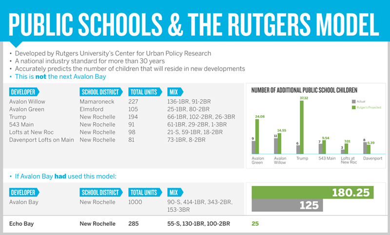

A NEW WATERFRONT REDEVELOPMENT NEW ROCHELLE, NY
ABOUT ECHO BAY
THE PROJECT
THE FACTS:
- 285 Luxury Apartments
- 25,000 Square Feet of Retail Space
- Largest increase in New Rochelle's waterfront access in a generation
- New 5 Acre Public Park paid for by Forest City
SCHOOLS:
- Forest City will pay $15.7 million to support schools over next 20 years.
- Forest City’s tax rate will adjust the same as any New Rochelle resident. If your taxes go up, Forest City's taxes will go up.
- Forest City will pay $17,500 per public school student which covers the full incremental cost of each student.
- Forest City will pay $5,200 per private school student in busing (the city's cost for these students), which would otherwise be paid for by taxpayers.
SCHOOL ATTENDANCE:
- The nationally accepted Rutgers Model is being used to determine the number of school age children in the project.
- There is estimated to be 25 public school students and 8 private school students.
- The New students would be a 0.002% increase in New Rochelle’s almost 11,000 student district.
- That equates to 2-3 students per Elementary School grade (K–5) and 1 student per Middle and High School grade (6–12).
- In an unprecedented move, the pilot agreement will have a “Look Back Provision.” That means there will be an Audit of actual students after year 10 and the amount Forest City pays will be adjusted accordingly.
RELOCATING CITY YARD:
- The new project will be built on the site of the current City Yard, where the Department of Public Works is based.
- The City Yard is nearly 100 years old and is functionally obsolete.
- The site is also a contaminated brownfield.
- The city has determined that the facility must be rebuilt or moved regardless of project.
- Forest City will pay for the entire site cleanup.
- Forest City will pay $2.5 million toward the new City Yard site.
- New Rochelle residents would benefit from the access to the waterfront, new public amenities, and new tax revenue.
PUBLIC BENEFITS
COMMUNITY BENEFITS:
- Forest City will invest more than $12 million in new public assets and infrastructure.
- The project opens the waterfront to public access.
- Forest City will return approximately 5 acres or 50% of the site to the public for a new park.
- The project creates retail business opportunities.
- The project is a catalyst to future development and growth in line with City’s vision and economic conditions.
- The project will increases property values in surrounding area.
FISCAL BENEFITS OVER THE NEXT 20 YEARS:
- The project will bring in $14.7 million in revenue to support the city.
- The project will bring in $3.9 million in county tax revenue.
- The project will bring in $7.9 million in city sales tax revenue.
- The project will bring in $15.7 million in school tax revenue.
- The project will bring in $6 million in regional sales tax revenue.
Echo Bay will generate $48 million in revenue.
ECONOMIC BENEFITS:
- The project will create 211 construction jobs over 2 years.
- The Project will create 59 retail and residential management jobs.
- The project will create over 1,000 indirect jobs.
- The project will generate $228 million in indirect economic benefits.
- The project will have a $79 million earnings impact.
Echo Bay will generate $307 million in economic benefits.
Rutger's Model - Case Studies
